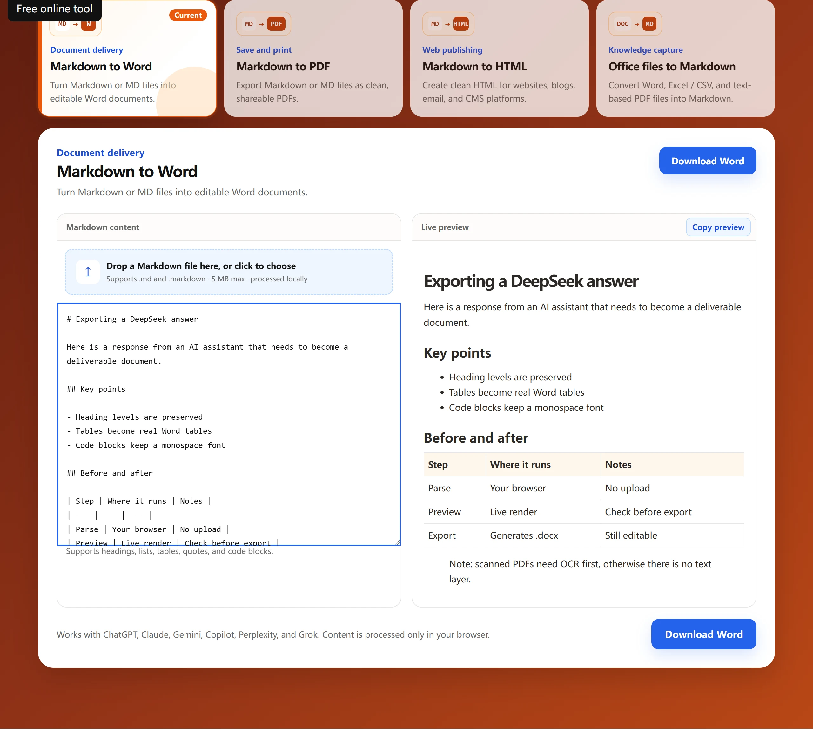

ChatGPT guide
How to Export ChatGPT Answers to Word
When a ChatGPT answer is worth keeping, you can turn it into a Word document in a few steps. Aixuno renders common Markdown elements and creates the document inside your browser.

Three steps to export a ChatGPT answer
- Copy the answer from ChatGPT, including its headings and lists.
- Paste it into Markdown to Word and review the preview.
- Download the generated `.docx` file.
No sign-up is required. Your copied content is processed locally in the browser.
Tips for a cleaner document
- Keep headings and lists when you copy the response.
- Review tables and code blocks in the preview before downloading.
- Use a clear filename after opening the document in Word.
Frequently asked question
Is the ChatGPT response uploaded during conversion?
No. The editor, preview, and export run in your browser.
When a Word file is the right output
- Someone else needs to leave comments or tracked changes on the draft.
- The answer becomes one section of an existing report, so it has to merge with existing styles.
- You plan to print it, or send it to a recipient who cannot open PDF attachments.
Limits worth knowing
- Images inside a ChatGPT answer are not part of the copied text, so they do not appear in the document.
- Mathematical notation arrives as plain text rather than native Word equations.
- A very long answer is easier to handle in two or three pastes than in one.
How it compares to other routes
| Route | Structure kept | Account needed | Text leaves the device |
|---|---|---|---|
| Paste straight into Word | Partly — styling comes along, heading levels drift | Word only | No |
| Paste into a plain text editor first | No — everything collapses into one block | No | No |
| Aixuno Markdown to Word | Yes — headings, lists, tables, quotes, code blocks | No | No, conversion runs in the browser |
Questions people ask before exporting
Does exporting to Word keep the original formatting?
Structure is kept — headings, lists, tables, quotes and code blocks — but the visual theme of the ChatGPT page is not reproduced.
Is there a file size limit?
The tool applies no fixed limit. Long answers are bounded only by what a browser text field can hold, so very long replies are easier in two or three parts.
Can I export several messages into one document?
Yes. Paste them in reading order and give each block its own heading, otherwise the outline merges into one flat section.
If the output does not look right
- Hash marks appear in the document. The lines need a space after the
#; without it Markdown treats them as plain text. - A table arrives as one long paragraph. Pipe tables need a delimiter row of dashes under the header, and every row must carry the same number of pipes.
- Numbering restarts in the middle. List numbering is derived from the source, so an interrupted list has to be merged before conversion.